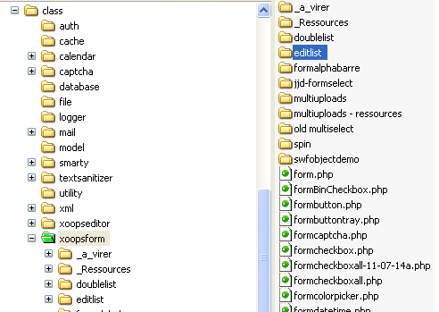

EditList version 1.1 pour Xoops
Ce composant permet d'utiliser une liste déroulante modifiable.
Important:
L'enregistrement en
table d'une valeur saisie qui ne figure pas dans la liste est à la
charge de l'application si nécéssaire, lors de la validation du
formulaire.
Copier le dossier complet dans le répertoire "class/xoopsform/" du site.

Les
fichiers "index.html"
ne sont pas listés dans ce tableau, mais doivent
restés ans chaque dossier pour empêcher leur parcours via le navigateur.
| Dossier |
Fichier | Description |
Prod |
Dev |
Doc |
|
| editlist |
changelog.txt | Historique du
composant |
X | |||
| formeditlist.php | Classe xoopsform à
inclure dans
le projet |
X | ||||
| /js/ | editlist.js | Source Flash du
composant
(utiliser flash 8 si vous souhaitez faire des modifications) |
X | |||
| /images/ | select_arrow.gif select_arrow_down.gif select_arrow_over.gif |
Images du composants |
X | |||
| /css/ |
editlist.css | Feuille de style
pour l'affichage de la liste déroulante |
X | |||
| /doc/ | editlist-french.html | Documentation du composant | X |
//inclure la classe dans le cas ou le composant n'est pas intégré dans xoops
include_once (XOOPS_ROOT_PATH . "/class/xoopsform/editlist/formeditlist.php");
//Instanciation de la classe
$obj = new XoopsEditList ($caption, $name, $value, $size);
//Affichage du sélecteur dans un template.
$xoopsTpl->assign('multiUploads', $obj->render());
//ou bien directement:
// echo $obj->render();
| Paramètre |
type | Défaut | description |
| $caption | string |
Obligatoire |
Titre affiché |
| $name | string |
Obligatoire | Nom du composant
qui sera récupérer après validation du formulaire;. |
| $value | string |
Obligatoire | Valeur |
| $size | string |
optionaelle | Largeur de la zone
en caractères Le dossier doit exister et être en chmod "0777". |
| addOptionArray($tOptions); | Prototype: function addOptionArray($tOptions) |
| Paramètres $tOptions: tableau des options à afficher dans la liste déroulante |
|
| Commentaires: hérité de xoopsFormselect |
|
| setBackground | Prototype: function setBackground($background) |
| Paramètres: $background : Couleur de fond d la liste déroulante |
|
| Commentaires: Pour la couleur de fond de la zone de saisie utiliser la méthose 'setExtra' |
|
| setHeight | Prototype: function etHeight(120);($height) |
| Paramètres: $height : Int : hauteur de la liste déroulante en pixel |
|
| Commentaires: Ce parametre est un entier. |
|
| setExtra | Prototype: function setExtra($extra) |
| Paramètres: $extra: string : cette valeur sera ajouter dans les attribut de la zone de texte. |
|
| Commentaires: hérité de xoopsFormselect exemple : $objet->etExtra("style='background-color: #C4DDF3'"); // defini la couleur de fond de la zone de texte |
|
| render | Prototype: function render() |
| Paramètres: aucun | |
| Commentaire: hérité de xoopsFormselect -> XoopsFormElement Renvoi le code HTML pur l'affichage du sélecteur de fichier dans la page du site. |
| refreshEditableSelect | Prototype: function refreshEditableSelect(sName) |
| Paramètres: sName : String : Nom donner à l'objet dans la classe xoopsFormEditList. | |
| Commentaire: Normalement il n'y a pas besoin d'appeler directement les fonctions javaScript du composant; Cependant il s'avère que dans certains cas, l'affichage n'est pas correcte, notammnet quand le composant est dans un conteneur masqué (visible=hidden). il semble que cela désactive certaine fonctionalités du CSS. Ce cas eut arriver par exemple avec une gestion d'onglets qui affiche que l'onglet courant et masque les autres. Pour palier ce problème, il est possible d'appeler la fonction "refreshEditableSelect(sName)" juste après avoir rendu l'objet conteneur visible. Si le conteneur était visible lors de la création de la page, il n'est pa utile d'appeler cette fonction. Il n'est pas nécéssaire non plus de l'appeler à chaque fois qu'on rend le conteneur visible, la première fois suffit. |
//Definion des parametres du composant
$caption = 'Catégorie';
$name='categorie';
$value='essence';
$width = 30;
//Liste de valeur de la liste déroulante
$tCharges = array('divers','Frais professionels','Fonctionnement','Transport');
//instancie le composant
$xf = new XoopsEditList($caption, $name, $value,$width ) ;
//ajout de la liste de valeur
$xf->addOptionArray($tCharges);
//Couleur de fond de la liste déroulante
$xf->setBackground('#E6C755');
//Hauteur de la liste
$xf->setHeight(120);
//Style de la zone de texte saisissable
$xf->setExtra("style='background-color: #D0F8AA'");
//affiche de liste modifiable
echo $sf->render();
*
*
*